Version 12.0.1
Click on "Activities" Menu
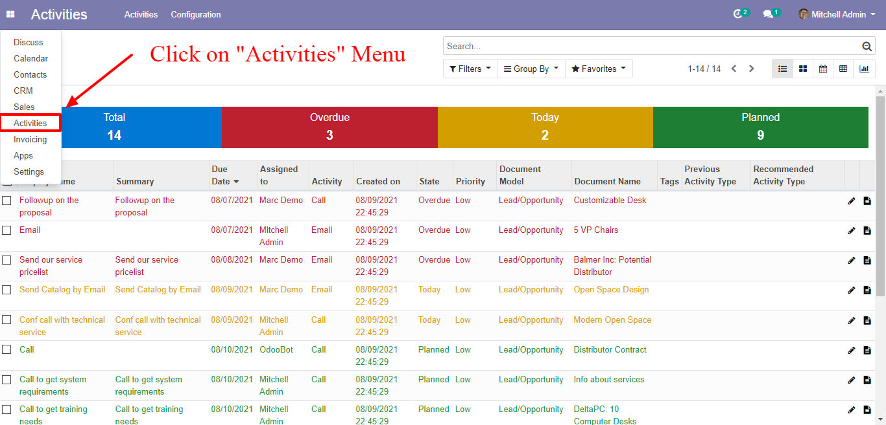
Activity Tree View
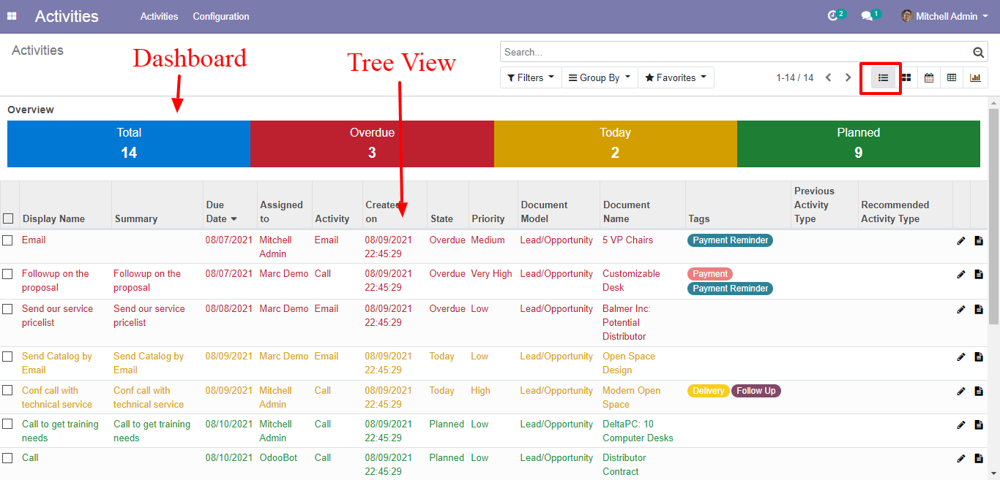
Click on tile to collapse/expand overview table
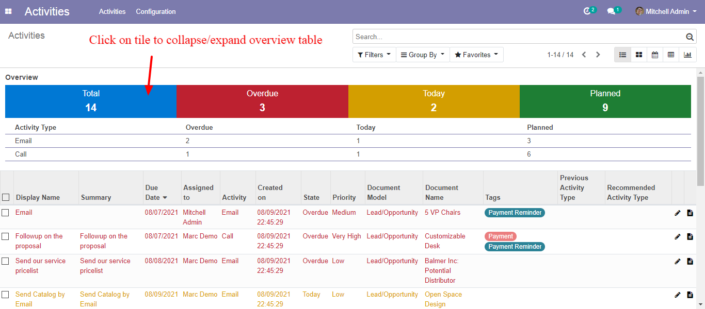
Click "Edit" button to edit activity/open activity form
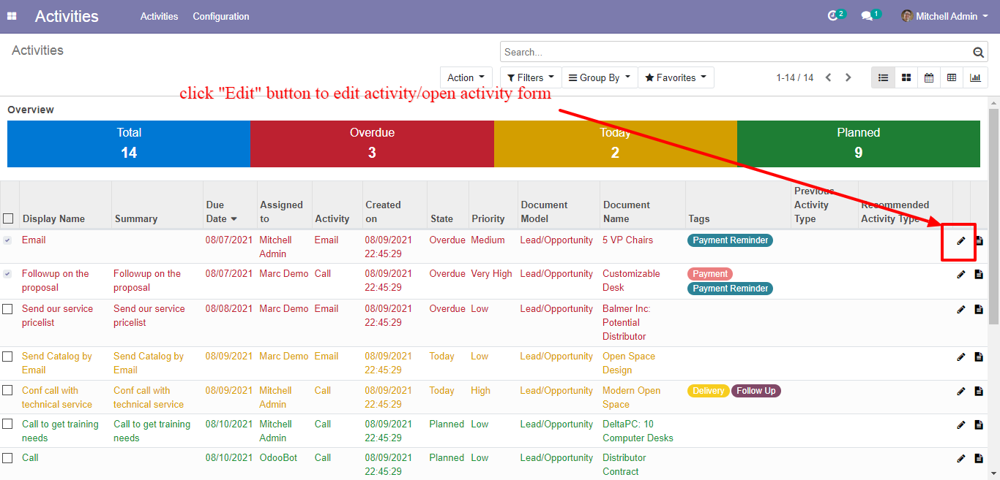
Activity form will opened when you click "Edit" button
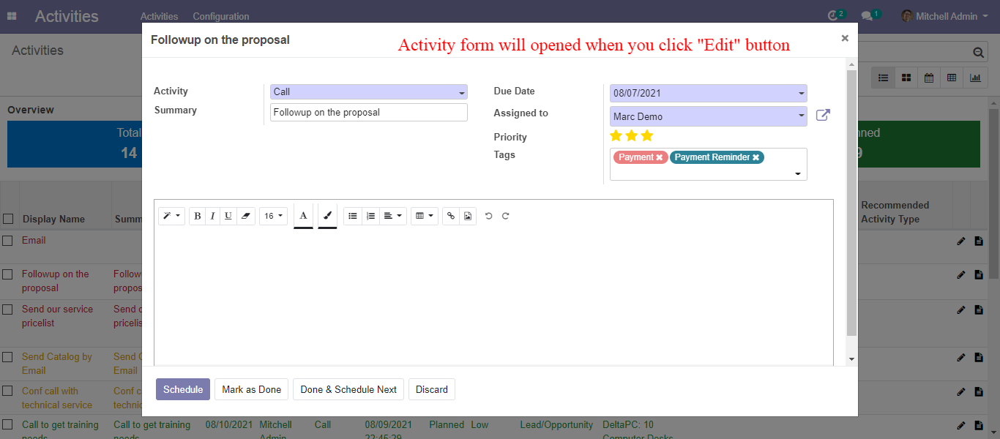
Click "Document" button in order to open related document
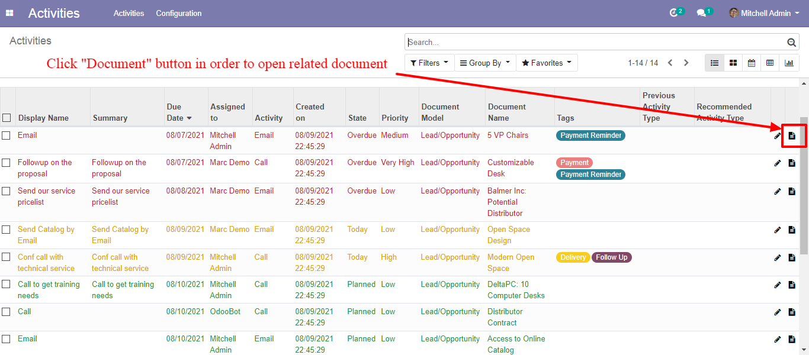
Releted document will open when you click "document" button
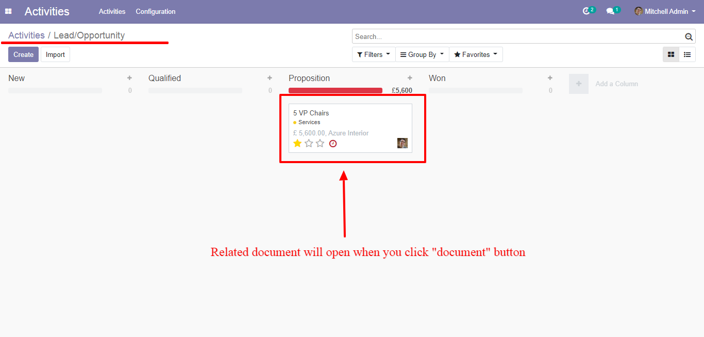
Tons of Filter
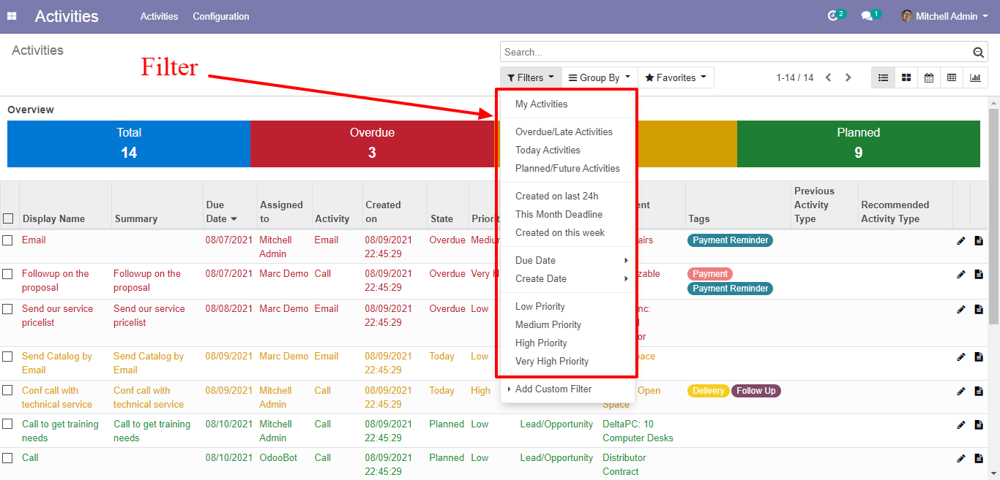
Tons of Group by
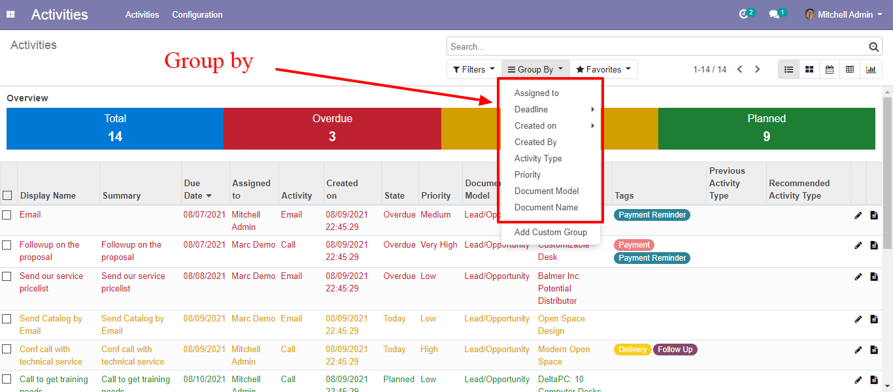
Kanban view
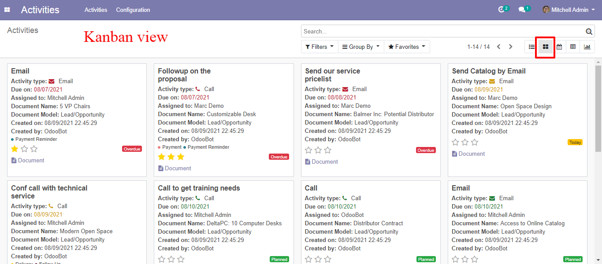
Calendar view
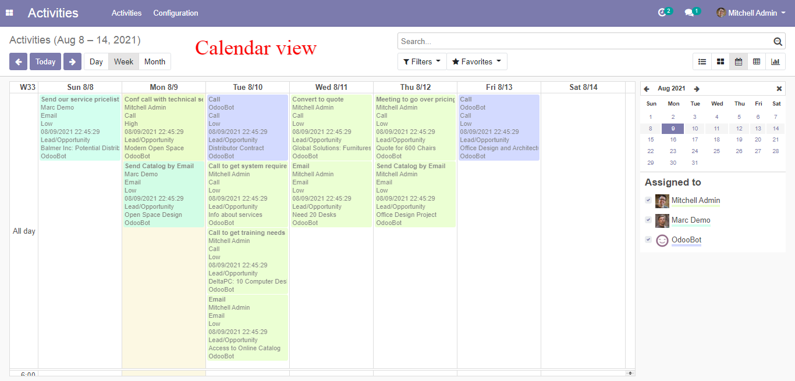
Pivot view
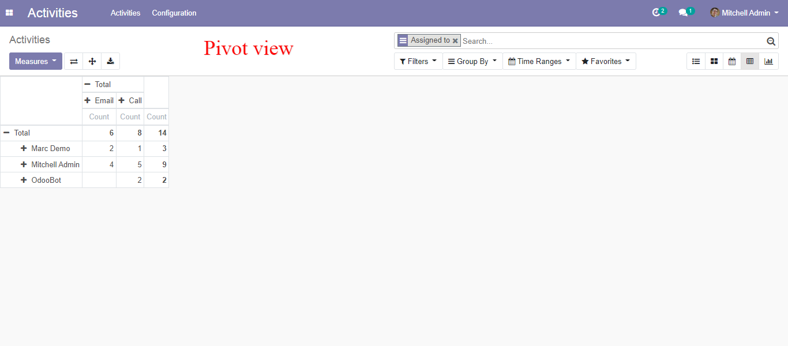
Graph view
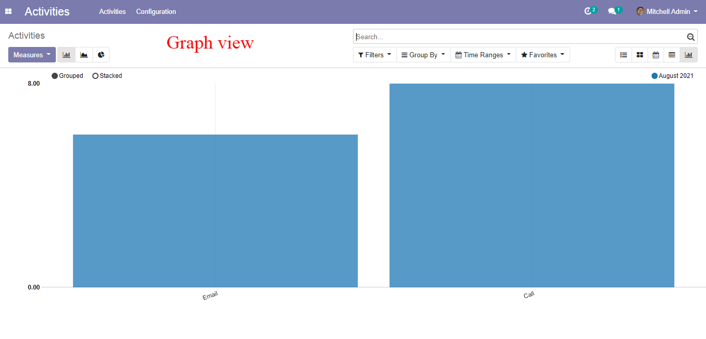
Priority and Tags fields added in activity
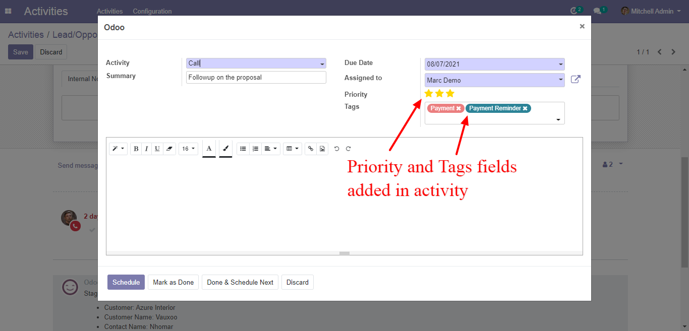
"Activity tags" menu
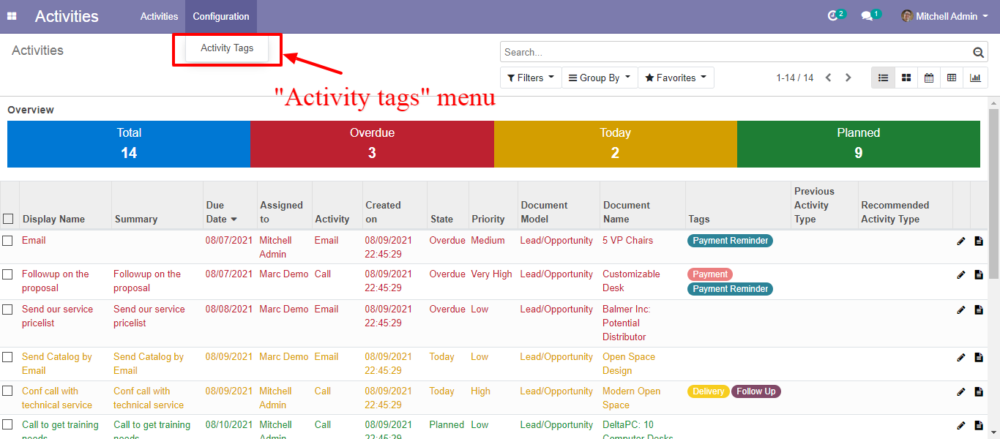
Create "Activity tags" here
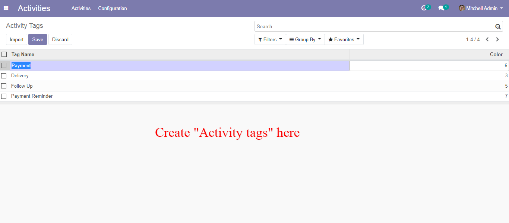
A user can see all other user activities but, only edit or done own activities.
if you don't select/assign manager or user groups to a user.
Note:
A user can see all other user activities but, only edit or done own activities and only see own documents.
its a standard odoo behavior (record rule) if you don't select/assign manager or user groups to a user.
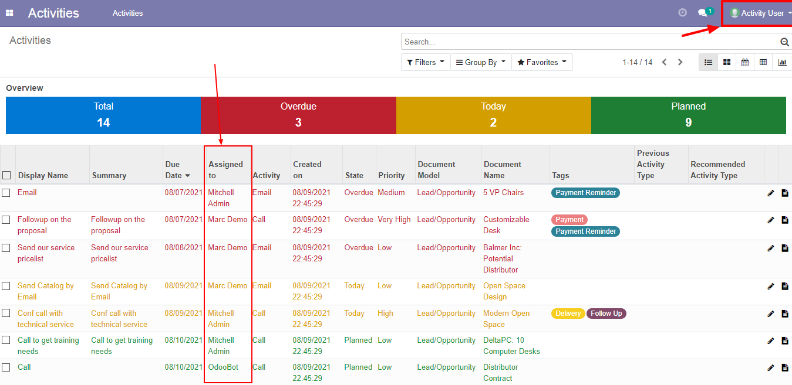
Error given if an user try to edit or done another user activities
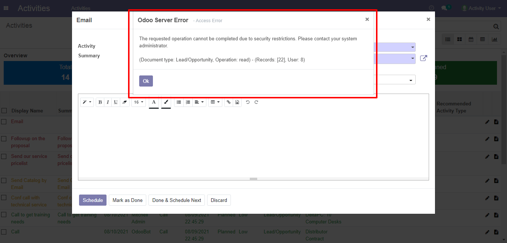
activity management security groups
User: can see own activities
Administrator: can see all user activities
Note: if you don't' choose any security groups means standard odoo flow (A user can see all other user activities but, only edit or done own activities).
Activity management security groups: User and Administrator/Manager
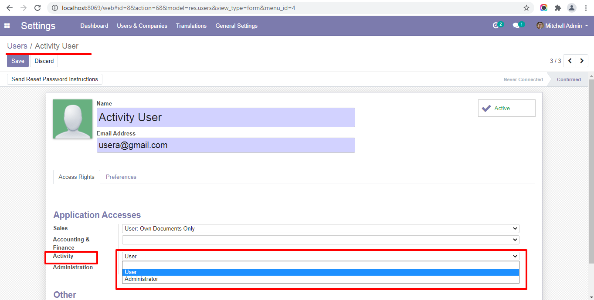
Activity user can see own activities
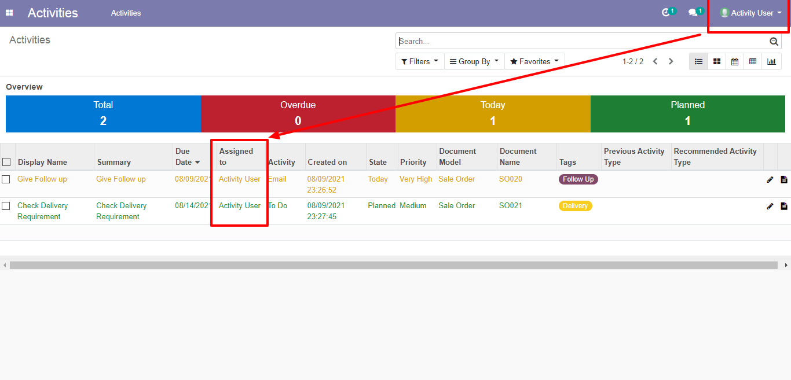
Activity Administrator/Manager can see all user activities
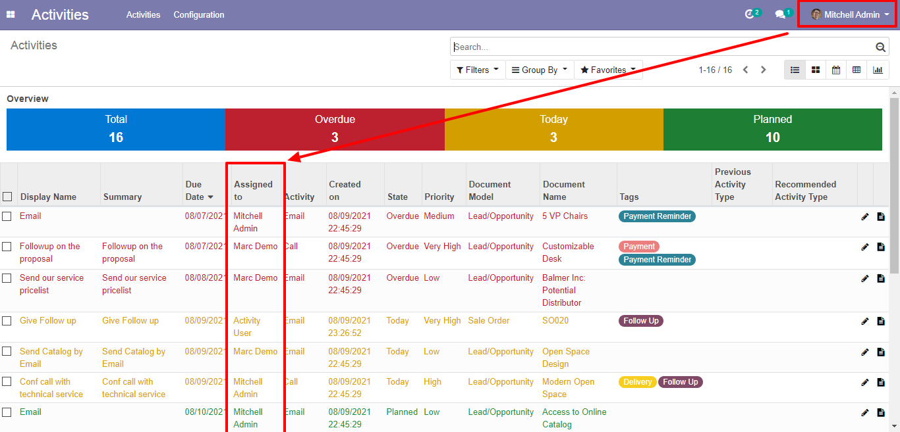
Set a activity user and administrator security groups
Set a priority on an activity
Set tags on an activity
Ideal for managing many activities.
Tons of filters and group by in search view for managing and filtering activities to help quickly find the right activity to work on.
Simplified process to edit an existing activity, or complete an activity without having to navigate to the document
Easily get a clear understanding of daily to-dos.
12.0.1 (14 Aug 2021)
First Release